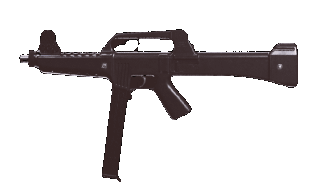

Doporučený loadout
Muzzle
SOUND SUPPRESSOR
Barrel
7.9" RIFLED
Optic
MICROFLEX LED
Underbarrel
FOREGRIP
Ammunition
40 RND
Foto
Statistiky
Reálné informace
SM-03 (Submetralhadora Modelo 03, doslova "samopal Model 3") je brazilský prototyp samopalu.
Po odchodu ze společnosti Bérgom S/A financoval Nelmo Suzano spolu s dalšími dvěma společníky novou společnost LAPA (Laboratório de Projetos de Armamento Automático) a začal vyrábět tři zbraně, útočnou pušku ráže 5,56 mm FA-03 a karabinu ráže 22 LR CA. M2 a samopal s názvem SM-03. Poslední jmenovaný byl odeslán do testovacího střediska Marambaia, kde jím brazilská armáda prohnala 6 500 nábojů; zbraň prošla a v roce 1992 získala prestižní zprávu ReTEx. Nakonec společnost LAPA zkrachovala, když se pro rodinu pistolí nepodařilo najít kupce a vyroben byl pouze jeden kus SM-03.